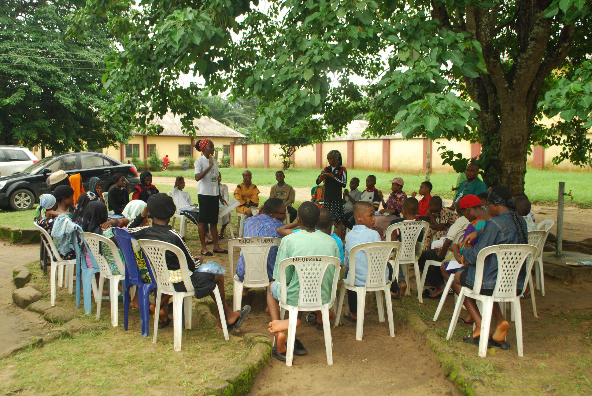

Camping Ministry
Creating memorable spaces where spiritual development, fellowship, leadership and outdoor learning come together.
Step away from routine. Make room for a personal encounter with Christ.
Scripture Union Camping Ministry provides Christ-centred camp experiences where children, students, and young school leavers encounter Christ and grow spiritually, socially, and practically.
Camp activities include Bible study, discipleship, counselling, seminars, life-skills training, drills, games, recreation, fellowship, and shared meals. The ministry creates a fun, safe, and supportive environment where participants can build meaningful relationships, develop positive character, discover practical life skills, and deepen their commitment to following Christ.

Camping Moments
Make room for meaningful moments.
Support camps through prayer, service, expertise, logistics and resources.